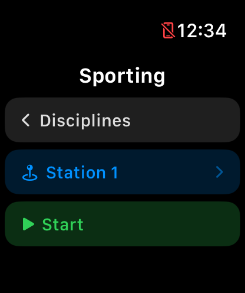
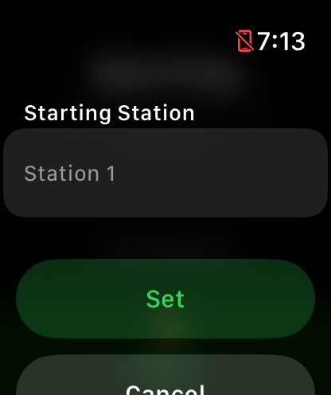
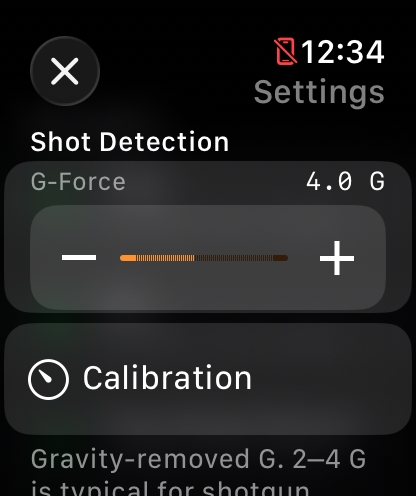
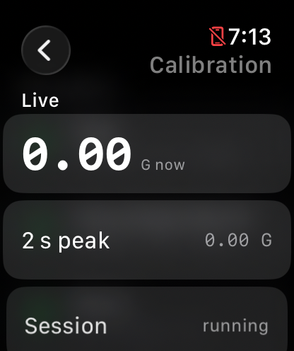

On the Apple Watch
The watch runs the whole round — from picking a discipline to saving the scorecard.

Discipline list
The first screen every time the app opens. Tap a discipline to head to its start screen.
- Discipline rows
- Each row shows the discipline's icon, name, and its shape in shorthand: 25 clays · 5 st · 2 shots means 25 targets per round across 5 stations, with up to 2 shots allowed per single. Disciplines with pairs show the mix instead, like 3S + 1P — three singles and one pair per station.
- Where they come from
- Disciplines are created and edited in the iPhone app and sync to the watch automatically — the list is read-only here.

Start screen
One last stop before shooting. Pressing Start hands scoring over to the watch — after this you only tap to flag misses.
- Top block
- The discipline's name, its round shape (3S + 1P · 25 clays · 5 st), and Start St. 1 — the station you'll begin on. Tap anywhere in this block to change the starting station.
- ‹ Disciplines
- Back to the discipline list.
- Start
- Begins the round: shot detection turns on and the scoring screen appears.

Starting station
If your squad starts you on a different peg, tell the app where you begin — station numbers on the scorecard will match the ground.
- Station wheel
- Pick any station the discipline defines (Station 1 up to the discipline's station count).
- Set / Cancel
- Set saves the choice — the app remembers it per discipline for next time. Cancel leaves it unchanged.

During the round
This screen runs the whole round hands-free. Every detected shot scores the next clay as a hit — you only touch it to flag a miss. When you lower your wrist it dims to just the score, and detection keeps running.
- Score counter
- Hits over shots taken so far — 4/5 means 4 hit out of 5 clays shot at.
- Progress line
- St. 1 · Tgt 3 of 5 — the station you're on and which target of that station is next. Pairs read Pair 4 of 4.
- Dot row
- Your last few clays: green = hit, yellow = second-barrel hit, red = miss. The gray dot is the clay that's up next.
- Miss
- Flags your most recent shot as a miss. For a pair you get two buttons — 1st and 2nd — one per bird; tap again to flip a clay back to a hit.
- Prev / Next
- Prev undoes the last clay and steps back — use it if a slammed door scored a phantom shot. Next skips ahead (say, a no-bird you never shot at); on the final target it reads End and finishes the round.
- ✕ (top left)
- Abandons the round after a confirmation — the score is discarded, nothing is saved.

Round summary
Shown the moment the last clay is scored.
- Headline score
- Hits, total clays, and your percentage — green at 90% or better, yellow from 70–89%, red below that.
- Stations
- One row per station with a dot for every clay (same colors as during the round) and that station's hits/clays.
- Save & Done
- Sends the scorecard to your iPhone and closes the round. If the phone isn't reachable, the watch queues it and delivers it later.
- New Round
- Discards this summary view and returns to the start screen for another round.

Settings
Shot detection is tuned here on the watch — the wrist wearing the sensor is the source of truth. Open it from the bottom of the discipline list.
- G-Force
- The recoil threshold: how hard a jolt must be to count as a shot, from 1.0 to 8.0 G. The default of 2.5 G suits most guns — 2–4 G is typical shotgun recoil. Raise it if bumps score phantom shots; lower it if real shots go undetected.
- Calibration
- Opens the live calibration screen below — the easy way to set the threshold for your gun and load.
- Window
- The double-barrel window, 0.2–2.0 seconds (default 1.5 s): two shots closer together than this count as one clay — first and second barrel. Only applies where the discipline allows 2 shots per single.

Calibration
Measures your actual recoil at the range so the threshold fits your gun, load and mount. At rest it reads zero — the numbers move the moment you shoot. Every detection plays a haptic so you know it registered.
- G now
- The live, gravity-removed G-force at your wrist, updating in real time.
- 2 s peak
- The strongest jolt in the last two seconds — after a shot, this is your recoil reading.
- Threshold
- The same G-Force setting as on the Settings screen, adjustable here while you watch live readings.
- Set from last peak
- One-tap tuning: fire a few shots, then tap this to set the threshold to about 75% of your measured peak — firm enough to ignore knocks, loose enough to never miss a shot.